第10回国際森田療法学会のご案内
終了しました！
- 会期
2019年8月30日（金）・31日（土） - 大会長
李江波教授（皖南医学院附属蕪湖市第二人民病院・中国） - 会場
中国安徽省蕪湖市海螺国際会議センター（Wuhu Conch International Conference Center）
（南京空港から車で約1時間の距離にある会議場・ホテルです。 団体参加者は空港から会場まで無料で送迎の予定です。）
※会場はこちらへ - 募集演題
森田療法に関する臨床・基礎研究、症例報告、 理論的検討、活動報告、他の精神療法との比較など。
この国際学会では日本や世界で活躍する森田療法家たちが集い、2日間の会期を通じて、森田療法をどのようにして各国に応用しているかについてプレゼンテーション、ワークショップを行います。また具体的な事例をもとに、各国の森田療法家が助言を行うセッションも設ける予定です。 - 学会公用語
日本語、中国語、英語
（会議中は、中日、中英の通訳が入る予定です。） - 抄録
母国語および英文の抄録（英文はスペースを含めて1000文字以内）を
こちらsentian77@126.comにお送りください。 - 締切
2019年6月10日（月） - 学会参加費
28,000円（2日間の食事、懇親会費を含む）
※なお閉会翌日の9月1日（日）に中国内観療法学会が同じ場所で開催されます。国際森田療法学会と内観療法学会の両方にご参加の場合、参加費は33,000円になります（3日間の食事を含む）。 - 学会連絡先
李江波教授（皖南医学院附属蕪湖市第二人民病院・中国）
E-mail：1015950973＠qq.com
なお詳細は、International Committee for Morita Therapy (ICMT) のHPにも掲載予定です。
公式HP：httpss://moritatherapy.org/
中国蕪湖市で森田療法セミナーが開催！
- 2018年9月21日〜23日にかけて、中国心理衛生協会・森田療法特別委員会の主催により、中国安徽省の蕪湖市海螺国際会議センターにて、専門家を中心とした森田療法セミナーが開催されました。日本からは東京慈恵会医科大学附属第三病院精神神経科診療部長・舘野歩先生が招待され、その他、北京大学の崔玉華教授、天津医科大学・李振涛教授、シ博市第五医院・路英智主任医、第四軍医大学 施旺紅教授他、90名程の参加者で開催されました。
- 内容としては、森田療法による神経症の発症原因とそのメカニズム等の基本的な考え方と理論をはじめ、症例や森田神経質の診断基準などを、皖南医学院附属蕪湖市第二人民病院の李江波教授が解説されました。また東京慈恵大の舘野歩准教授による「恐怖性障害、強迫性障害に 対する森田療法の実際」の講演もあり、臥褥や日本の強迫症に対する特徴など質疑・応答も活発だったようです。
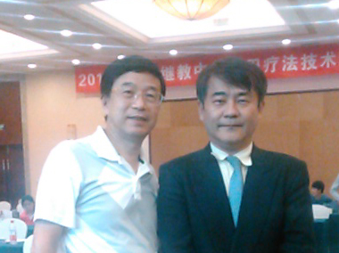
李江波教授と舘野歩准教授
中国天津にて森田療法研修会を開催！
- 2011年11月28日〜29日にかけて中国の天津医科大学にて、専門家向けの森田療法研修会（第二回）が開催されました。日本からは浜松医科大学の森則夫先生、森田療法研究所の北西憲二先生の2名が講師として招待され、中国側では李振涛先生などが参加され研修会が行われました。
- 当研修会は、昨年はじめて天津医科大学の金学隆教授の企画で開催され、第二回となります。参加者は、医師や心理士など約50名ほどが参加し、講演もさることながら、講義が終了した後の質疑・応答も非常に活発となり、現実の患者に対する治療の仕方や対応法など、非常にリアルで熱気のある研修会となりました。尚、この研修会で当財団が助成して実施された中国における森田療法の実施に関する調査も報告されました。
- 研修会終了後には、日本を代表して森則夫先生より、参加者全員に森田療法の受講修了書が手渡されました。
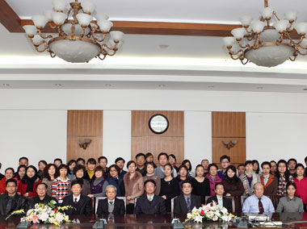
天津医科大学第四病院にて
中国語版の外来森田療法のガイドラインが完成！
- 2009年秋に発刊された外来森田療法のガイドライン（下）は、2010年春に英語版として翻訳・発刊（右下）されました。そして同年10月には中国語版（右上）への翻訳と発刊も実現し、森田療法の海外普及により一層、はずみをつけそうです。中国語版は、日本森田療法学会の依頼のもと、中国第四軍医大学の施旺紅教授による翻訳・編集により実現しています。
- 尚、当ガイドラインに関するお問い合わせは、日本森田療法学会事務局まで。
※日本森田療法学会はこちらへ
外来森田療法のガイドライン
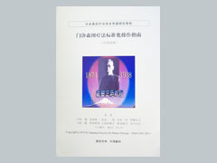
中国語版（2010.10）
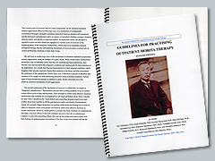
英語版（2010.3）
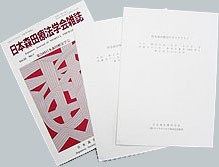
日本語版（2009.10）
中国における森田療法の現状
中国西安第四軍医大学心理学研究室
施旺紅教授 2007.7
- 森田療法の導入
森田療法の中国での目覚しい発展は最近のことだが、導入してから半世紀が経っている。森田療法がはじめて中国にもたらされたのは、1957年のことである5）。そのときは森田博士の高弟である、東京慈恵会医科大学の高良武久教授が中国を訪問し、北京、上海において森田療法についての学術講演をした。しかし当時は、中国の政治理念が現在とはすこし異なっていた。そういう関係で森田療法の実施は、それから20年あまりも重視されなかった。その後、1981年になって、鐘友彬先生が医学書『国外医学・精神科分冊』で、初めて森田療法に関する論文を公表した。以来、中国国内の雑誌に、しだいに森田療法にかかわる文章が発表されるようになった。
1990年に中国心理衛生協会の招きで、日本から森田療法関係者が中国を訪問した。以来、中国で森田療法が急速に広がる。1990年4月、日本のメンタルヘルス岡本記念財団理事長・岡本常男氏を団長とする森田療法代表団が中国を訪問した。北京での中国語版の森田図書の贈呈式に出席するためである。浜松医科大学・大原健士郎教授、生活の発見会会長・長谷川洋三氏など社会的な著名人と、生活の発見会会員などがその代表団のメンバーだった。このとき同時に、中国心理衛生協会が主催した講習会で、大原教授は「森田療法の歴史とその理論」を系統的にくわしく紹介した。また、生活の発見会会員が、森田療法の学習によって神経症から再生した体験を話した。それは講習会の参加者医師、心理学関係者とって、大いに励みになった。そのあと森田療法は、はじめて中国国内で発展をたどることになる。
中国第一回森田療法
高級技能訓練クラスの風景
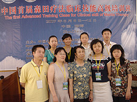
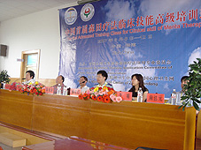
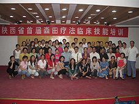
中国で出版された主な書籍
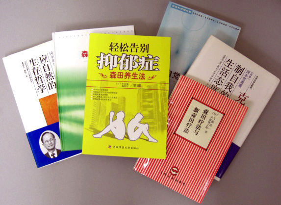
- 森田療法の実施状況
中国では1990年からしだいに、森田療法が実施されるようになった。まず天津医学院、北京回龍観病院、西安市精神衛生センター、山東地区の精神病院、および河北省、江蘇省などの地域がはじめであり、いまでは全国の約30以上の省と市などの地域62か所の医療機関で、この治療法が実施されている。そのうち24か所は入院治療、37か所は外来で森田療法を行っている。主として総合病院、精神病院、医科大学の付属病院、精神衛生研究所、中国医学研究院、心理健康諮問センター、および大学病院などである。
中国において森田療法で治療する神経質症の種類は多く、強迫神経症、対人恐怖、不安神経症、普通神経症などである。現在、各病院でその適応症を広げるように努めている。たとえば、うつ病からはじめて、つぎに統合失調症、各種の人格障害、ヒステリー症にも広がりつつある。といっても森田療法を実施の際には多くの病院で、その他の療法も併用している。もっともよく併用されるのは認知療法、行動療法、精神分析法である。薬物療法も行なわれている。 - 森田療法に関する学術活動と研修
1992年9月、天津において「第一回全国森田療法シンポジウム」を開き、参加者は200人近くにのぼった。このとき学術講演としては、大原健士郎教授、藍沢鎮雄教授、北西憲二助教授、宮里勝政助教授、玉井光講師、伊丹仁朗医師がそれぞれ、森田療法に関する貴重な報告をした。また岡本常男先生の「私と森田療法」と題する特別講演があった。中国側も47編の論文と研究レポートを発表し、このシンポジウムで交流を深めた。1995年4月、「第3回国際日本森田療法学会」を北京において開いた。この学術シンポジウムには、世界14か国と中国各地の学者約300名が参加した。106編の論文の提出があり、60名以上の中国と各国の代表が論文発表と報告を行った。2004年10月、「第5回国際日本森田療法学会」を上海で開いた。2006年9月21-22日、中国第六回森田療法学会を山東省第五人民病院で開催された。日本から日本森田療法学会の現理事長の北西先生、前理事長田代信維先生、牛島定信先生,現事務局長の中村敬先生が招待され、それぞれ講演を行ったが、学会の演題は41題あり、200名を越す会員が集まった。台湾からも2題が出ていた。「その雰囲気は上海での国際森田療法学会にも劣らないものであった」と田代先生は評価された。
それに、2007年5月26-27日、陝西省第一回森田療法技能訓練クラス（日本の森田療法セミナと同じもの）が行われ、参加者は70人くらい、演者は施旺紅博士だった。その後、2007年6月6-12日、中国山東省第五人民病院で中国第一回森田療法高級技能訓練クラスが行われた。演者は施旺紅、崔玉華、李振濤、路英智、張海英、南博士だった。全国22省70人くらい参加した、森田療法を実施する医者たちは森田療法の理論と臨床応用について語りあい、みずからの見方を深めるとともに経験の交流をし、中国森田療法と国際シンポジウムを中国で開催したことで、森田療法の中国での推進に大いなる力を与えられた次第であった。
森田療法を広げるのはわかりやすい書籍が不可欠である。今まで、日本から翻訳された森田療法関する中国語書籍は13冊、それに中国人著の書籍は二冊であった（うち一冊は中村敬先生との共著）。
【中国で出版された主な書籍】※発行年代順
- 高良武久：『森田心理療法実践』（森田精神療法の実際）
人民衛生出版社,北京,1989. - 岡本常男：『克制自我的生活態度』（自分に克つ生き方）
北京大学出版社,北京,1991. - 長谷川洋三：『児童教育的探討』（しつけの再発見）
人民衛生出版社,北京,1991. - 森田正馬：『神経質的実質与治療』（神経質の本態と療法）
人民衛生出版社,北京,1992. - 長谷川洋三：『行動転変性格』（行動が性格を変える）
人民衛生出版社,北京,1992. - 岡本常男：『順応自然的生存哲学』（心の危機管理術）
北京大学出版社,北京,1994. - 中国社会医学編集部編：『中国社会医学 1994年増刊・特集日本森田療法的発展概況』
（「森田療法学会雑誌」からの抜粋） - 中華人民共和国衛生部主管,
西安,1994. - 大原浩一・大原健士郎：『森田療法与新森田療法』（森田療法とネオモリタセラピー）
人民衛生出版社,北京,1995. - 青木薫久：『焦慮不安与自我調節』（心配症をなおす本）
人民衛生出版社,北京,1995. - 森田正馬：『神経衰弱与強迫観念根治法』（神経衰弱と強迫観念の根治法）
人民衛生出版社,北京,1999. - 森田正馬・水谷啓二：『自覚和領悟之路』（自覚と悟りへの道）
復旦大学出版社,上海,2001. - 増野 肇：『森田式心理諮問』（森田式カウンセリングの実際）
復旦大学出版社,上海,2004. - 中村敬・施旺紅：『うつはがんばらないで治す』
第四軍医大学出版社,西安,2006.
- 高良武久：『森田心理療法実践』（森田精神療法の実際）
- 中国森田療法は変化しつつある
一方、1992年10月ごろ、ハルピン心理健康指導学校のなかに、はじめて森田心理訓練の講座が設けられた。学校式の森田心理訓練を始めたこととなる。学校式の森田心理訓練では、まず神経質症を、だれにでもありがちな神経質的な悩み、とする。そして神経質患者と精神科医師の関係を、生徒と教師としての関係とみなす。すなわち、ここでは森田療法を病院式から学校式に変え、学校で学ぶ?心理素質の訓練?として行なう。また1990年以来、天津市は率先して、「生活と心理健康クラブ」を成立させた。
北京大学は毎週一回強迫症の集団森田療法の授業をしていた。
第四軍医大学心理学室施旺紅博士は2005年12月から森田集団療法で神経症を治療し始めた。いい治療効果になった。
最近はインターネット上で森田療法発見会がとても人気がある。北京大学の王暁松という強迫障害患者は森田療法の本を読んで悟った。彼は2000年から、ネットで森田療法発見会を建設した。いま、16000人以上のメンバーを持っている。おたがいに学びあい、助けあい、啓発しあって、神経質症の悩みを克服していき、そして健康人としての生活をとり戻している。2004年一月から「施旺紅教授森田論壇 https://www.buildlife.org/」を設けて、森田理論を紹介しながら、各種の神経症や不眠、うつ病などの治療を具体的に指導している。もう100もの文章と600もの返事を返した。2006年から陽光心理工程Homepageで「施旺紅博士森田論壇 https://www.sunofus.com/bbs/forumdisplay.php?fid=77」を設けた、多くの患者を助けた。これからは、ネット森田療法、教育式森田、集団森田療法、外来森田療法などもっと盛んになるだろう。
中国で開催された主な会合・シンポジウム等
- 平成2年
4/8「森田療法シンポジウム」
（北京中国心理衛生協会）150名
（4/7〜4/14 北京、西安、上海） - 平成3年
4/23「中国語訳『自己に克つ生き方』出版記念講演会」
北京大学日本研究中心 200名
（4/22〜4/28 北京 天津） - 平成4年
9/11〜9/12「第一回中国森田療法シンポジウム」
（天津）200名
10/25〜26「北京医科大学80周年記念式典」出席（北京） - 平成5年
4/15〜18「精神医学集中講義」北京医科大学
4/28「日中交流森田療法講演会」
上海第二医科大学/西安医科大学 - 平成6年
5/14「日中交流森田療法講演会」重慶医科大学/華西医科大学
12/27「日中交流森田療法講演会」大連西山医院 - 平成7年
4/26〜28 「第三回国際日本森田療法学会」北京 360名
（北京 桂林）
9/23・26「日中交流森田療法講演会」
第四軍医大学/新彊精神衛生中心
（9/21〜9/28 西安、ウルムチ） - 平成8年
4/24〜25「森田療法研修会」北京医科大学
4/26「日中交流森田療法講演会」中国医科大学 - 平成9年：4/28〜30
「中国森田療法応用専業委員会成立大会」煙台 200名
「第二回森田療法学術交流会」 - 平成10年
10/7〜10/10「WAP国際会議」北京 - 平成11年
10/26 午前「森田療法指導者養成訓練部成立大会」
北京 140名 首都医科大学
10/26 午後「中国衛生部」北京
中国衛生部副部長・王龍徳先生に会見
10/29 「森田療法講演会」安微省合肥市 200名
安微医科大学「中・日・米心理療法会議」の一環として開催
シンポジウム開催風景
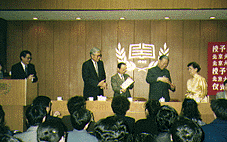
日中交流森田療法講演会（於・北京大学）
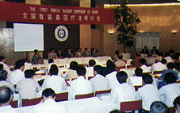
中国日本森田療法学会（於・天津）
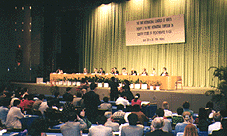
第三回国際日本森田療法学会（於・北京）
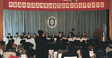
中国森田療法応用専業委員会成立大会
（於・煙台）
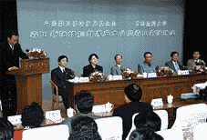
森田療法指導者養成訓練部成立大会
（於・北京）
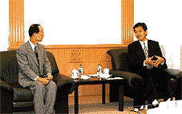
中国衛生部副部長・王龍徳先生に会見
（於・北京）
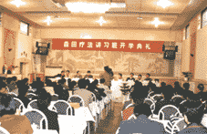
森田療法講演会（於・安微医科大学）
森田療法のひろがり
- 中国の森田療法
中国で本格的に森田療法が実施されるようになって約8年。
その現状をメンタルニュースNo.15「中国における『森田療法」より抜粋してご紹介します。
合わせて、普通神経質症を克服した陳長祥さんの体験記をこ一読ください。
温 泉 潤
中国では、1990年から森田療法がしだいに実施されてきました。まず天津、北京、西安、山東および河北、江蘇省などの地域です。そして1996年6月までに、中国全国の紛30以上の省と市などの地域、62ヵ所の医療機関で実施されています。そのうち、24ヵ所は入院治療、37ヵ所は外来で森田療法を行なっています。主として総合病院、精神病院、医科大学の付属病院、精神衛生研究所、中国医学研究院、心理健康諮問センター、および大学病院などです。
また、これらのうちの24ヵ所の病院で森田療法を行なった結果、入院治療の改善率（良好改善を含む）は、それぞれ50〜100%、中程度成績（平均改善率に相当）は90%で、そうとう高い改善率を示しています。外来での改善率は65〜90%ぐらいになります。その平均値は70%です。
中国において森田療法で治療する神経質症の種類は多く、まず強迫神経症、対人恐怖、不安神経症、普通神経症などです。現在、各病院でその適応症を広げるように努めています。たとえば、うつ病、精神分裂症、各種の人格障害、ヒステリー症にも広がりつつあります。といっても森田療法実施の際には多くの病院で、その他の療法も併用しています。もっともよく併用されるのは認知療法、行動療法、精神分析法です。薬物療法も行なわれています。
なお、森田療法が中国ですんなり受け入れられた要因は、その理論と実践方法が、医者と患者ともによく理解できるからです。 - 発見会に似た学習組繊も誕生
いっぽう、1992年10月ごろ、ハルピン心理健康指導学校のなかに、はじめて森田心理訓練の講座が設けられました。学校式の森田心理訓練を始めたわけです。2年あまりで104人が訓練を受けました。学校式の森田心理訓練では、まず神経質症を、だれにでもありがちな神経質的な悩み、とします。そして神経質患者と精神科医師の関係を、教師と生徒としての関係とみなします。すなわち、ここでは森田療法を病院式から学校式に変え、学校で学ぶ心理素質の訓練として行なうわけです。
森田博士は「神経質（症）は病気ではない」といわれます。森田心理訓練ではこの理論を、生活実践のなかで自己のパーソナリティー（性格）を生かす方法として用います。つまり神経質症で悩んでいる人を、正常なパーソナリティー的人間として訓練のなかへ導きます。こうして、しだいに症状を軽減し消失させていくことによって、やがて各人の生活態度も徹底的に変わりました。
1990年以来、天津市は率先して、「生活と心理健康クラブ」を成立させました。つづいて西安市においても、日本の生活の発見会によく似た「生活発見会」を組織しました。おもな活動は、森田理論を基礎として集団で学習させることです。活動内容としては、講習、集団学習、懇談会、個人相談、講演会などです。おたがいに学びあい、助けあい、啓発しあって、神経質症の悩みを克服していきます。そして健康人としての生活をとり戻しました。しかし中国においてこのような組織は成立したばかりで、まだ普及の段階には至っていません。今後の大きな課題です。 - これからの展望と発展
1990年、日本森田療法代表団の訪中がきっかけとなり、森田療法が中国に導入されました。その後、メソタルヘルス岡本記念財団の支援のもとに、中国で第1回森田療法シンポジウムを開催し、また第3回国際日本森田療法学会を行ない、森田図書も続々と出版されました。同時に、中国の各地で相次ぎ森田療法の治療組織が生まれ、約60以上の医療機関と関係組織で森田療法やその教育が行なわれました。いわゆる、中国独特の発展と普及を遂げつつあります。いずれにせよ森田療法は、東洋文化を基盤とする心理治療に属しています。中国は伝統を重視する国です。森田理論の基本は、中国古代の老子・荘子の哲学思想のなかに含まれていますので、中国の人には受け入れやすいのものでした。ゆえに速やかに、中国で森田療法が進展することができたのです。
なによりも中国は、世界で人口がもっとも多い国です。また神経質症の種類も多いといえます。それに近年の、改革開放による経済発展にともない、競争の機会も生じて、ここ10年来、神経質症の患者の数も増えました。さらに増加の傾向をしめしています。
森田療法の理論は、多くの患者が習得しやすいうえ、実施のさいにも非常に経済的です。森田療法は中国においてますます発展すると信じています。
（Wen Quanrun/中国森田療法発展基金会秘書長・中園心理衛生協会理事） - 「メンタルニュース」は、公益財団法人メンタルヘルス岡本記念財団発行の広報紙です。
詳細は「生活の発見」平成10年10月号47頁を参照ください。
中国での森田療法普及活動の柱「中国森田療法発展基金会」が設立、活動へ
中国での森田療法の普及活動は、ここ数年間で急速に拡大しつつあります。中国では、北京大学をはじめ数多くの有名大学で、カリキュラムとして取り上げられ、本格的に浸透・定着しつつあります。
このような普及背景を受けて、2年ほど前から、中国での森田療法普及活動の母体となる「中国森田療法発展基金会」が準備・設立され、去る平成10年4月11日に、評議会が開催されました。
当評議会では、森田療法の普及活動に対する助成金の選考が行われ、投票により5つの対象に対して助成が決定されました。